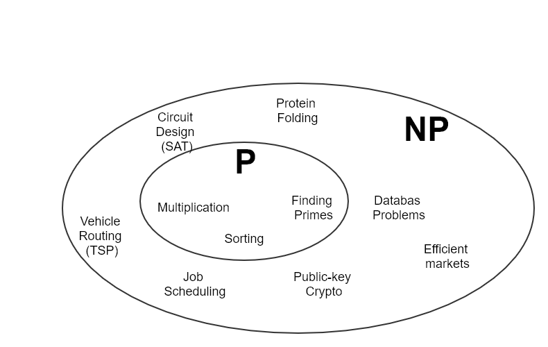
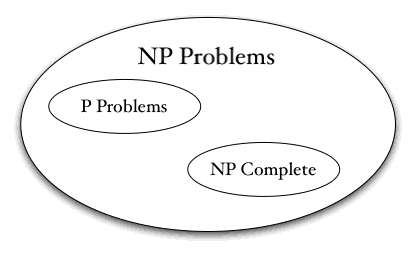

Funny animation
P versus NP problem
The P versus NP problem is a major unsolved problem in computer science. It asks whether every problem whose solution can be quickly verified can also be solved quickly. The informal term quickly, used above, means the existence of an algorithm solving the task that runs in polynomial time, such that the time to complete the task varies as a polynomial function on the size of the input to the algorithm (as opposed to, say, exponential time). The general class of questions for which some algorithm can provide an answer in polynomial time is "P" or "class P".
 An answer to the P versus NP question would determine whether problems that can be verified in polynomial time can also be solved in polynomial time. If it turns out that P ≠ NP, which is widely believed, it would mean that there are problems in NP that are harder to compute than to verify: they could not be solved in polynomial time, but the answer could be verified in polynomial time. The problem is considered by many to be the most important open problem in computer science. Aside from being an important problem in computational theory, a proof either way would have profound implications for mathematics, cryptography, algorithm research, artificial intelligence, game theory, multimedia processing, philosophy, economics and many other fields. It is one of the seven Millennium Prize Problems selected by the Clay Mathematics Institute, each of which carries a US$1,000,000 prize for the first correct solution.
 A proof that showed that P ≠ NP would lack the practical computational benefits of a proof that P = NP, but would nevertheless represent a very significant advance in computational complexity theory and provide guidance for future research. It would allow one to show in a formal way that many common problems cannot be solved efficiently, so that the attention of researchers can be focused on partial solutions or solutions to other problems. Due to widespread belief in P ≠ NP, much of this focusing of research has already taken place. Also P ≠ NP still leaves open the average-case complexity of hard problems in NP. For example, it is possible that SAT requires exponential time in the worst case, but that almost all randomly selected instances of it are efficiently solvable. Russell Impagliazzo has described five hypothetical "worlds" that could result from different possible resolutions to the average-case complexity question. These range from "Algorithmica", where P = NP and problems like SAT can be solved efficiently in all instances, to "Cryptomania", where P ≠ NP and generating hard instances of problems outside P is easy, with three intermediate possibilities reflecting different possible distributions of difficulty over instances of NP-hard problems. The "world" where P ≠ NP but all problems in NP are tractable in the average case is called "Heuristica" in the paper. A Princeton University workshop in 2009 studied the status of the five worlds.